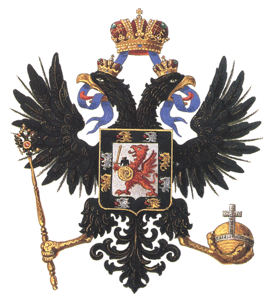
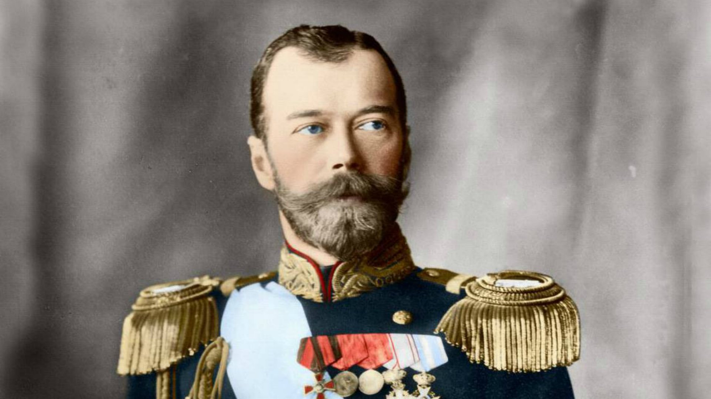
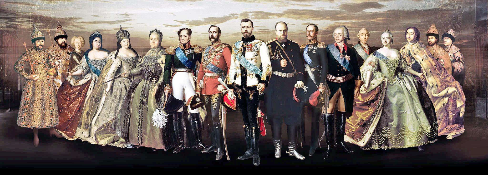
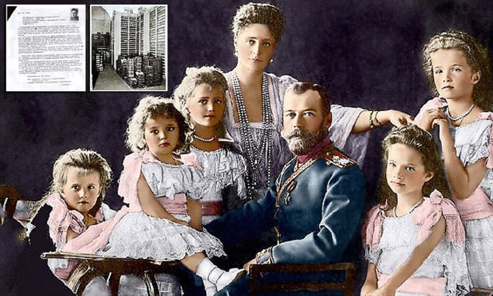
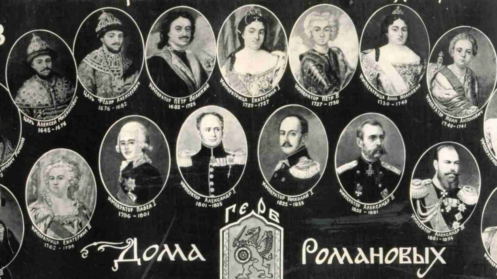

Романовы
Рома́новы — русский боярский род, носивший такую фамилию с конца XVI века; с 1613 года — династия русских царей и с 1721 года — императоров всероссийских, а впоследствии — царей Польши, великих князей Литвы и Финляндии, герцогов Ольденбурга и Гольштейн-Готторпа и великих магистров Мальтийского Ордена. Отреклись от престола в марте 1917 года.

Прямая ветвь рода Романовых на всероссийском престоле пресеклась после смерти императрицы Елизаветы Петровны; с 5 января 1762 года императорский престол перешёл по женской линии к Гольштейн-Готторп-Романовской династии, сыну царевны Анны Петровны и герцога Карла-Фридриха Гольштейн-Готторпского, по династическому договору их сын Карл Петер Ульрих Гольштейн-Готторпский (будущий император всероссийский Пётр III) признавался членом императорского Дома Романовых. Таким образом, по генеалогическим правилам императорский род (династия) именуется Гольштейн-Готторп-Романовской (Гольштейнъ-Готторпъ-Романовской династіи).
Фамилия
Первым из рода фамилию Романов стал носить Фёдор Никитич (он же патриарх Филарет) в честь своего отца Никиты Романовича и деда Романа Юрьевича Захарьиных. Юридически члены царской, а затем императорской, семьи не носили вообще никаких фамилий («царевич Иван Алексеевич», «великий князь Николай Николаевич» и т. д.).
Кроме того, с 1761 года в России царствовали потомки сына Анны Петровны и герцога Гольштейн-Готторпского Карла-Фридриха, которые по мужской линии происходили уже не от Романовых, а от Гольштейн-Готторпов (младшая ветвь Ольденбургской династии, известной с XII века). В генеалогической литературе представители династии, начиная с Петра III, носят название Гольштейн-Готторп-Романовы. Несмотря на это, с XX века названия «Романовы» и «Дом Романовых» общепринято употреблялись для официального обозначения Российского Императорского Дома, герб бояр Романовых был включён в официальное законодательство, а в 1913 году широко отмечалось трёхсотлетие дома Романовых.

После 1917 года фамилию Романовых официально стали носить (по законам Временного правительства, а затем в эмиграции) практически все члены царствовавшего дома. Исключение составляют потомки великого князя Дмитрия Павловича. Он был одним из Романовых, кто признал Кирилла Владимировича императором в изгнании. Женитьба Дмитрия Павловича на Одри Эмери была признана Кириллом морганатическим браком члена царствующего дома, а супруга и дети получили титул князей Романовских-Ильинских. Остальные Романовы также вступили в морганатические (с точки зрения российского закона о престолонаследии) браки, однако не посчитали нужным менять фамилию.
История
Романовы до 1613 года
Согласно родовому преданию, предки Романовых выехали на Русь «из Пруссии» в начале XIV века. Однако историк Веселовский полагает, что Романовы — выходцы из Новгорода[4].
Первым достоверным предком Романовых и ряда других дворянских родов считается Андрей Кобыла — боярин московского князя Симеона Гордого. Потомки Фёдора Кошки стали прозываться Кошкиными. Дети Захария Ивановича Кошкина стали Кошкиными-Захарьиными, а внуки — просто Захарьиными. От Юрия Захарьевича пошли Захарьины-Юрьевы.

Благодаря браку Ивана IV Грозного с Анастасией Романовной Захарьиной род Захарьиных-Юрьевых стал в XVI веке близким к царскому двору, а после пресечения московской ветви Рюриковичей начал претендовать на престол.
Старшая дочь Александра Борисовича Горбатого-Шуйского, Евдокия, была замужем за Никитой Романовичем Захарьиным, дедом царя Михаила[5][6], что дало Романовым некоторое основание выводить свою родословную от Рюрика. При этом следует отметить, что не все историки считают её матерью Фёдора Никитича: некоторые[7][8] придерживаются мнения, что матерью Фёдора была другая жена Никиты, Варвара Головина.
Цари
Цари
В 1613 году внучатый племянник Анастасии и сын Фёдора Никитича Михаил Фёдорович был избран на царство, и его потомство (которое традиционно называется «Дом Романовых») правило Россией до 1917 года.
Всего династия Романовых дала стране 5 царей: Михаил Фёдорович, его сын Алексей Михайлович, и три его сына — Фёдор Алексеевич, Иван V и Пётр I. Последний принял императорский титул в 1721 году.
Императоры
Первым императором из династии Романовых был Пётр Великий. Ему в качестве самодержавной императрицы наследовала супруга Екатерина I, чьё происхождение до сих пор остаётся загадкой. После её кончины престол перешёл внуку императора от первого брака — Петру II, с его кончиной мужское поколение царя Михаила Федоровича пресеклось.

Из-за интриг далее линия наследования детей Петра Великого была заморожена, и императорский престол был отдан дочери царя Ивана V (старшего брата Петра I) — Анне Иоанновне. Ей наследовал правнук Ивана V — Иоанн VI Антонович, сын герцога Брауншвейгского, единственный представитель на русском троне династии Мекленбург-Брауншвейг-Романовы. Последний был свергнут своей тёткой, «дщерью Петровой» — императрицей Елизаветой. Она до конца жизни оставалась незамужней и бездетной и передала корону сыну своей сестры Анны Петровны. Императрица Елизавета была последним царствовавшим представителем рода Романовых без смешения с иностранными династиями.
Ветвь Гольштейн-Готторп-Романовская
Гольштейн-Готторп-Романовы
Анна Петровна и герцог Карл Фридрих
После брака Анны Петровны с герцогом Карлом Гольштейн-Готторпским род Романовых фактически перешёл в род Гольштейн-Готторпов, однако по династическому договору сын от данного брака (будущий Пётр III) признавался членом Дома Романовых.
Таким образом, по генеалогическим правилам императорский род именуется Гольштейн-Готторп-Романовский[3], что нашло отражение на родовом гербе Романовых и гербе Российской империи.
Начиная с Петра III и Екатерины II, точнее, с их сына Павла I, престол в Доме Романовых передавался практически по прямой линии, без хитросплетений родословных предшествующего периода, в частности, благодаря изданному императором Павлом I указу о престолонаследии по прямой мужской линии в 1797 г. Павлу I наследовал его старший сын Александр I, у которого не было сыновей. Второй сын — Великий князь Константин Павлович от престола отказался (что стало одним из поводов восстания декабристов). Следующим императором стал третий сын Павла — Николай I. Наследники престола со времён Екатерины Великой носили титул цесаревича.
Ему наследовал старший сын Александр II. Его старший сын цесаревич Николай Александрович скончался от туберкулёза в возрасте 21 года, и следующим императором стал второй сын Александр III, которому наследовал старший сын, последний русский правитель Николай II, отрёкшийся от престола, а затем расстрелянный. Номинально в течение 16 часов императором был великий князь Михаил Александрович, который также отрёкся.
Таким образом, из Гольштейн-Готторпской ветви Романовых происходит 7 императоров.
XIX век
Родословное древо российских ветвей герцогов Лейхтенбергских, принцев Ольденбургских, герцогов Мекленбургских и их родственных взаимоотношений с домом Романовых
В XIX веке императорская семья крайне разрослась. Были приняты специальный закон — «Учреждение о Императорской Фамилии» в редакциях 1797 и 1886 годов, регулирующие права и обязанности членов семьи, а также материальные аспекты их существования, в частности, был введён титул князь императорской крови для слишком дальнего потомства императоров. Подробнее см. Российский Императорский Дом.
Ещё три ветви Романовых (по женской линии) входили или были родственны с Российским Императорским Домом[9]:
Лейхтенбергские: происходившая от великой княгини Марии Николаевны (дочери Николая I) и её мужа герцога Максимилиана Лейхтенбергского
Ольденбургские: происходившая от герцога Ольденбургского Петра Георгиевича, женившегося на Екатерине Павловне (дочери императора Павла),
Мекленбургские: происходившая от брака великой княгини Екатерины Михайловны с герцогом Мекленбург-Стрелицким.

Царская семья в 1913 г., великая княгиня Ольга Николаевна, великая княгиня Мария Николаевна, Николай II, царица Александра Фёдоровна, великая княгиня Анастасия Николаевна, царевич Алексей Николаевич и великая княгиня Татьяна Николаевна.
Романовы после 1917 года
В начале 1917 года династия Романовых насчитывала 65 членов[10] (в том числе 32 представителя мужского пола), 18[10] из которых (в том числе 13 мужчин) были убиты большевиками в 1918—1919 годах в Екатеринбурге, Алапаевске, Петербурге. Спасшиеся 47 человек оказались в изгнании за границей (в основном во Франции и США).
В 1920—1930-х годах значительная часть представителей династии продолжала надеяться на крах советской власти в России и восстановление монархии. Великая княжна Ольга Константиновна в ноябре-декабре 1920 года была регентом Греции и приняла в страну часть беженцев из России. В 1942 году двоим представителям Дома Романовых предлагали черногорский престол. Существует Объединение членов рода Романовых.
Списки Романовых
Романовы после 1917 года
Все нынешние представители этого рода являются потомками четырёх сыновей императора Николая I:
Александровичи, потомки императора Александра II. Эта ветвь имеет трёх ныне живущих представителей — его праправнучку Марию Владимировну, её сына Георгия Михайловича, и правнука Кирилла Владимировича от его старшей дочери Марии Кирилловны, княгини Лейнингенской — князя Николая Кирилловича, принца Лейнингенского. Кроме них, к линии Александра II относятся два рода его узаконенных морганатических потомков — князья Романовские-Ильинские и светлейшие князья Юрьевские.
Константиновичи, потомки великого князя Константина Николаевича. По мужской линии ветвь пресеклась в 1973 году (со смертью Всеволода, сына Иоанна Константиновича), а по женской со смертью сестры Всеволода Иоанновича — Екатерины Иоанновны в 2007 году.
Николаевичи, потомки великого князя Николая Николаевича Старшего. Последние представители по мужской линии — Дмитрий Романович (1926—2016) и Николай Романович (1922—2014) скончались. По женской линии ветвь представлена дочерьми Николая Романовича: Наталия (р.1952), Елизавета (р.1956) и Татьяна (р.1961).
Михайловичи, потомки великого князя Михаила Николаевича. К этой ветви принадлежат все остальные живущие ныне Романовы-мужчины, младший из которых родился в 2013 году.